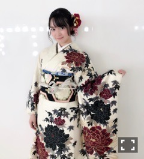

| 2017/12 22 Fri | 中元日芽香 ひめたん-0o0-その731 |
最後の更新にします。
クローズまで時間があるので、よかったら
今までの記事も読んでみて下さい。
バナナムーンGOLD
ヒムペキ兄さんのコーナーにて
歌出演しました！
サプライズだったので
事前に告知できずすみません。
バナナマンさんに今年言いたいことがある
女の子たちで集まって歌いました！
番組公式サイトに写真上がってるので
見てみて下さい。
前回のらじらー！サンデーで
ソロ曲「自分のこと」
音源一部解禁されました～～
メイキング映像も楽しみにしていて下さい。
懐かしの景色に心揺さぶられました。
頃安監督がSNSで
紹介してくださってました！
お世話になりました！
「僕だけの君～Under Super Best～」
よろしくお願いします。
結局ひめたんいつまで活動するの？と
沢山聞かれました（笑）すみません。
そして今も
最後の更新と言いながら
最後らしい言葉が見つかりません。笑
最近は沢山時間があります、
私にとって必要な時間だと感じています。
いろんなことを考えます。
お世話になった人の顔も浮かぶし、
思い出なんかも蘇ります。
振り返ってみて、やっぱり
私のした選択に何一つ後悔はありません！
全部正しかったと思いたい。
それを証明するのは自分自身の、
これからの行いですよね。
気がついたら
私はアイドルという職業に惚れてました。
仕事が恋人とはこのことで
勉強する時間も、寝る時間さえも惜しいと
思ったほどでした。
なんでこんなに夢中だったか
最後にお話ししても良いですか。
綺麗な衣装が着られて楽しい、
お写真撮られるのが楽しい、
ステージに立つのが楽しい、全部本当です。
でもそれ以上に
私はここにいていいんだって
認めてもらいたかった、
その一心で走ってきたような気がします。
この世界にいると、
私を必要としてくれる人が沢山いる。
私だけを見てくれている人が沢山いる。
それが嬉しくて今日まで続けてきました。
がむしゃらに進む姿勢というのは
それだけで人の胸を打つもので
特別な才能があるわけではない私でも
勇気なのか、癒しなのか、希望なのか、
色んな感情を与えられる。
アイドルの一番のウリは
素のキャラクターと
仕事への"姿勢"なんだと思います。
シンガーには敵わないし
ダンサーには敵わないし
芸人には敵わない。
パフォーマンスが完全でない分
いかに目の前のことに真摯に取り組むかが
求められている職業かなと考えた時、
私はアイドルとして何事にも
全力でぶつかってきたつもりです。
あくまで私のアイドル論ですが
語れと言われればいくらでも語ります。
それだけこのお仕事が好きでした。
忙しいのが幸せな私には正直、
次への準備期間が心穏やかではありません。
今の宙ぶらりんな状態は落ち着かなくて。
ですが私の進みたい方向性は
一応プランはあります。
説得力のある人間に。
そのための経験をこれからの時間で
沢山していきたいと思っています。
アンダーライブお疲れ様！
紅白3年連続出演おめでとう！
親愛なるメンバーひとりひとりに
この言葉を贈ります。
声を大にして言いたい。
あなたは乃木坂に必要な存在だよ。
ここに至るまでに誰か一人でも欠けていれば
今の乃木坂はなかった。本当にありがとう。
スタッフの皆様、ファンの皆様。
今までお世話になりました。
本当にありがとうございました。
またどこかで。
中元 日芽香
